1 Introduction
One of the key components of insurance practice is maintaining sufficient financial reserves to cover the future claim payments; in non-life insurance, those are often spread into several installments spanning multiple time units (e.g., years). The possibility that an insurance company could default on its payments because of an insolvency caused by business failures is utterly unacceptable; this aspect is closely watched not only by the companies themselves, but also by their regulatory bodies. The companies have to abide by the rules set by the latter, and maintain sufficient funds to cover payments for past and future claims. An example of such a regulatory directive in the European Union is European Parliament and Council (2009), widely known as "Solvency II".
The insurance environment being inherently stochastic, an important task of actuarial science is to devise stochastic prediction techniques of such loss reserves. An important class of these methods works with aggregated data, organized into a structure known in actuarial science as a run-off triangle. Methods that could be in this context called classical are either quite simple, using so-called development factors ((Mack 1993; Renshaw and Verrall 1998; Clark 2003; Verdonck and Debruyne 2011)), or rely on parametric assumptions justifying various regression models (Verrall 1996; Maciak et al. 2021). There is a growing interest in novel methods, offering better predictive performance, transparency, and robustness; an R package ProfileLadder, available from CRAN and introduced in this paper, chose to implement those proposed by Maciak et al. (2022).
Our motivation was and is to create and introduce the R package ProfileLadder as an
extension and complement of other packages devoted to claims
reserving—most importantly the ground-breaking package ChainLadder (Gesmann et al.
2025), featuring methods for non-life loss reserving that can be
considered classical (Mack chain ladder, over-dispersed Poisson and
other GLM models, Bornhuetter-Ferguson, etc.). Parametric reserving
methods beyond those contained in ChainLadder can be found also in the package NetSimR (Parizas 2025). On the other hand, our focus is rather nonparametric,
inspired by functional data analysis; also, distributional predictions
(which are generally considered compulsory, for instance by Solvency II)
are done in this vein: via permutation bootstrap, an original technique
introduced by Maciak et al. (2022). Classical techniques typically rely
on parametric distributional assumptions, which we are determined to
avoid; and our permutation bootstrap technique is applicable also to the
classical methods of point prediction (which at the R level means that
our permuteReserve() method can be applied also to the objects generated by ChainLadder).
Certainly, R is not new to actuarial science: various other topics are covered by packages actuaryr (Chmielewska 2025, actuarial reporting); lifecontingencies (Spedicato 2013, life contingencies); and actuar and actuaRE (Dutang et al. 2008; Campo 2025, credibility models); and others. While ProfileLadder is specifically designed to meet practical needs of actuaries, the methods implemented therein can also be applied in other areas—for instance, to model the spread of infectious diseases, operational risks, or other data where incomplete functional profiles arise. The main methodological outcome, the nonparametric reconstruction of missing fragments of the data, here particularly suited to the structured missingness in run-off triangles, is adaptable also to other domains such as price curves (Liebl and Rameseder 2019), growth curves (Delaigle and Hall 2013, 2016), medical data (Galmiche 2016), and geological or seismic activity profiles (Bauer et al. 2021).
The paper is organized as follows. Section 2 gives a brief summary of the implemented methods, including also some developments that were not available when Maciak et al. (2022) was published. In particular, these contributions beyond Maciak et al. (2022), are: a) theoretical—which includes a methodological approach for a run-off triangle exploratory, adaptation of the MACRAME algorithm beyond its data-driven version, methods for constructing one-year-ahead predictions (a new running diagonal) based on nonparametric approaches and, also, the permutation bootstrap applicable for other than just the functional based prediction methods; and b) practical—mainly in terms of new actuarial datasets with much longer developments than typical and explicit utilization of the proposed methods beyond insurance applications. Section 3 describes the main features and implementation details of the package, in the context of the sample session(s) featuring the main algorithms. Computational efficiency of the functional-based algorithms is illustrated and some comparisons with the classical parametric methods are also given there. Finally, Section 4 provides a summary and some outlook for possible applications beyond the actuarial context.
2 Description of the algorithms
The principal data structure used by claims reserving methods is the so-called run-off triangle. Formally, a cumulative run-off triangle is a dataset \(\{Y_{i,j};~i = 1, \dots, n, j = 1, \dots, n + 1 - i\}\), where \(i \in \{1, \dots, n\}\) corresponds to the occurrence year (when the insurance event happens) and \(j \in \{1, \dots, n + 1 - i\}\) to the development years (when the ensuing claims are paid). An example is shown in the left-hand panel of Figure 1. The gray area exhibits figures which an actuary knows (observes) at a given moment of time; the dots in the white area represent the unknown future, which has to be predicted—the triangle is to be “completed”. It is assumed that the number of development years in each line is definitive; in particular, the first line of a triangle is already “completed”—no future payments are expected there.
At times, it is also useful to rephrase the same data in terms of an incremental run-off triangle \(\{X_{i, j};~i = 1, \dots, n; j = 1, \dots, n + 1 - i\}\), with \(X_{i, j} = Y_{i, j} - Y_{i, j - 1}\), considering \(Y_{i, 0} = 0\). In what follows, random variables denoted by \(Y_{i,j}\)’s refer to cumulative run-off triangle(s) and random variables denoted by \(X_{i,j}\)’s to incremental run-off triangle(s).
The principal starting point of the algorithms proposed by Maciak et al. (2022) is the closely related concept of functional development profiles derived from aggregated data or run-off triangles respectively—the concept also known as the “patterns of loss emergence” (see Clark 2003). Its graphical rendition can be seen in the right-hand panel of Figure 1. Each point-prediction algorithm provides a prediction of the overall reserve, the overall future losses/payments, by completing missing fragments within these observed patterns. Given that the structure of the missing values in the run-off triangle is predetermined by its specific form, standard imputation methods assuming missing completely at random (MCAR) situation do not apply (as was theoretically justified by Maciak et al., 2022).
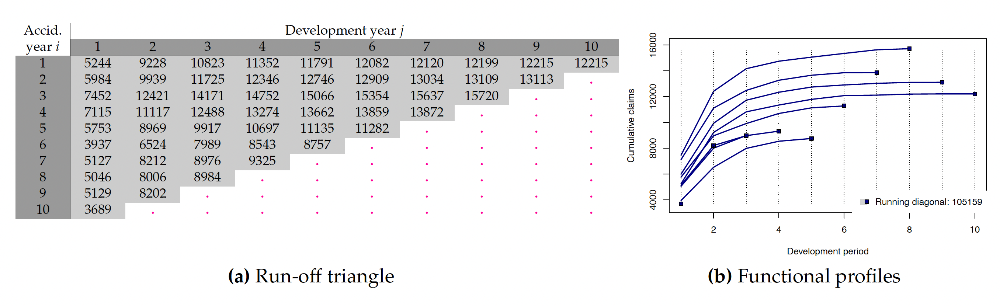
PARALLAX (PARALLel ApproXimation of missing fragments)
The idea of the first algorithm is to impute the missing parts of the run-off triangle by the most similar segments—triangle rows that can be found among the already observed development profiles. The name reflects the fact that in the functional development profiles, the imputation of the missing segments is always performed in a parallel way.
As described in Algorithm 1 scheme below, each step of the algorithm—the estimation of one unknown/unobserved quantity \(Y_{i,j}\) respectively the imputation of one missing linear fragment between the points \([j - 1, Y_{i, j - 1}]\) and \([j, Y_{i,j}]\) for \(i = 2, \dots, n\) and \(j = n - i + 2, \dots, n\), is performed via the minimization problem in (1). The overall reserve prediction of the true (but unknown) reserve \(\mathcal{R}\) (the principal output of the algorithm at the point prediction stage) is
\(\widehat{\mathcal{R}} = \sum_{i = 2}^n \widehat{Y}_{i,n} - \sum_{i = 2}^n Y_{i, n + 1 - i}\),
which is the difference between the (predicted) ultimate claim payments
\(\sum_{i = 1}^n \widehat{Y}_{i,j}\) and the claim payments being already
settled, the paid amount given by \(\sum_{i = 1}^n Y_{i,n + 1 - i}\) (the
first row of the run-off triangle is typically assumed to be fully
developed and, thus, \(Y_{1, n} = \widehat{Y}_{1, n}\)). Besides the
reserve estimate \(\widehat{\mathcal{R}}\), the algorithm also provides
a full completion of the triangle into an \(n \times n\) square—which
can be used for a detailed inspection of the overall performance of the
algorithm, but, more importantly, it is further needed for the
estimation of the whole reserve distribution in terms of the permutation
bootstrap resampling, as described in Section “Distributional predictions: Resampling via permutation bootstrap”.
Note the notation: the \(Y_{i,j}\) stand for the observed quantities and
\(\widehat{Y}_{i,j}\) for the predicted ones. The algorithm is implemented
in the R function parallelReserve(); key features and certain implementation details are
described in Section “PARALLAX and REACT”.
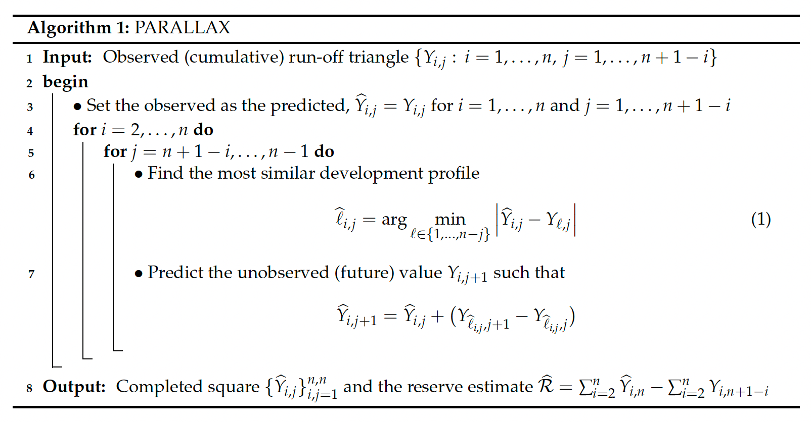
REACT (approximation by the most REcent ACcidenT year)
This algorithm can be viewed as a simplified version of PARALLAX: instead of
looking for the most similar parallel fragment among all existing
fragments of the run-off triangle, the REACT algorithm relies—in the
spirit of the classical development factors chain ladder methods—on
the most recent segment in terms of the previous development year (which
is, given the structure of the actuarial data, already observed). Formal
description is given in Algorithm 2. Note that unlike
Algorithm 1, the future
payment prediction in Algorithm 2 is not defined in terms of any minimization problem
any more. Therefore, the REACT algorithm is more straightforward and
slightly easier to implement; due to evident similarities, both PARALLAX
and REACT are implemented within the same R function parallelReserve(). See
Section “PARALLAX and REACT”. A comprehensive discussion of various
aspects of PARALLAX and REACT, addressing the pros and cons of both
algorithms can be found in Maciak et al. (2022), as well as practical
user recommendations and guidelines.
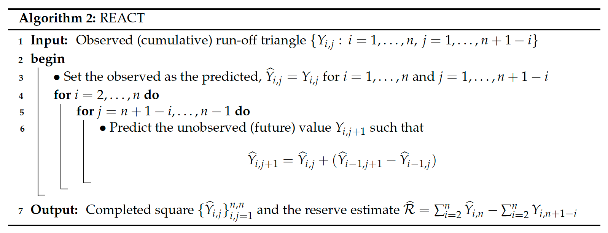
Note that for certain run-off triangles, triangles such that \((Y_{i,j} - Y_{i -1, j}) < (Y_{i, j} - Y_{k, j})\) for all \(i = 3, \dots, n\), \(j = n + 1 - i, \dots, n - 1\), and \(k = 1, \dots, i - 2\), both algorithms, PARALLAX and REACT, provide the same reserve prediction and the same completion of the missing fragments: both algorithms are equivalent in such situations.
MACRAME (MArkov Chain fRAgMEnt approximation)
The idea of this algorithm is to utilize a homogeneous Markov chain (MC) model to
obtain the reserve prediction. This strategy is slightly different and
more complex than the previous two; despite its additional mathematical
complexity, however, it is quite intuitive and can be seen as a complex
but rigorous generalization of the previous two algorithms described
above. The underlying stochastic model invites additional user-defined
adjustments and practically oriented modifications; unlike the MACRAME
algorithm described in Maciak et al. (2022), where only a constrained
and rather limited version of the algorithm was proposed, the present
implementation in the R function mcReserve() in ProfileLadder allows for all this fine tuning and
adaptations. See Section “MACRAME” details.
Firstly, unlike the previous two algorithms, MACRAME is based on the incremental run-off triangle \(\{X_{i,j};~i = 1, \dots, n; j = 1, \dots, n + 1 - i\}\). Let us recall that \(X_{i,j} = Y_{i,j} - Y_{i, j - 1}\) and \(Y_{i, 0} = 0\) for all \(i = 1, \dots, n\). In the first step, the algorithm transforms the incremental payments \(\{X_{i,j}; i = 1, \dots, n; j = 1, \dots, n + 1 - i\}\) into a finite set of states of a homogeneous Markov chain, \(\mathcal{S} = \{s_1, \dots, s_m\}\), and the observed run-off triangle is used to estimate the matrix of the corresponding transition probabilities \(\mathbb{P} = \big(p(s_{\iota_1}, s_{\iota_2})\big)_{\iota_1 = 1, \iota_2 = 1}^{|\mathcal{S}|, |\mathcal{S}|}\), for \(p(s_{\iota_1}, s_{\iota_2}) = \mathsf{P}[U_{i, j + 1} = s_{\iota_2} | U_{i, j} = s_{\iota_1}]\) where the increment \(X_{i, j}\) is represented by the Markov state which is taken by \(U_{i,j}\). Thus, each row \(i \in \{1, \dots, n\}\) is assumed to be governed by an underlying Markov chain process \(\{U_{i, j};~j \in \mathbb{N}\}_i\) and these processes are assumed to be independent for \(i \in \mathbb{N}\).
The assignment of the observed increments \(X_{i,j}\)’s into the states in \(\mathcal{S}\) is performed via break points (breaks) \(- \infty = g_0 < g_1 < \dots < g_{m - 1} < g_m = \infty\); each interval defined by the two adjacent grid points is represented by exactly one state \(s_k\) from \(\mathcal{S}\)). The transformation of the increments \(X_{i,j}\)’s into the Markov states is then straightforward: if \(X_{i, j} \in [g_{k - 1}, g_{k})\) for some \(k \in \{1, \dots, m\}\) then \(U_{i, j} = s_k\) where \(s_{k} \in \mathcal{S}\) and, also, \(s_{k} \in [g_{k - 1}, g_{k})\).
A fully data-driven method for finding appropriate break points
\(\{g_k\}_{k = 0}^m\) and the corresponding set of Markov states
\(\mathcal{S} = \{s_1, \dots, s_m\}\) was proposed in Maciak et al.
(2022), and it is set as the default option for the mcReserve() function in the
ProfileLadder package. The data-driven method is based on three crucial arguments:
- to ensure a 1–1 transformation in time and the incremental amounts, the default number of Markov states is the same as the number of the development periods, \(m = n\);
- the run-off triangle increments (excluding, by default, the first column of the run-off triangle) denoted as \(\{x_{(i+j-3)(i+j-2)/2+i}:=X_{i,j}:\,j>1;\,i+j\leq n+1\}\) are ordered and split into \(m\) bins by using the set of grid points \(\{g_m\}_{m = 0}^m\), where \(g_k:=x_{\left(\left\lceil \frac{kn(n-1)}{2m}\right\rceil+1\right)}\), for \(k=1,\ldots,m-1\); and, in addition, \(g_0 = - \infty\) and \(g_m = \infty\);
- the corresponding Markov states \(\mathcal{S} = \{s_1, \dots, s_m\}\) are taken as medians of the increments belonging to each bin, i.e., \(\mathcal{S}:=\big\{s_k:=\mbox{median}(X_{i,j}\in[g_{k-1},g_k):\,j>1,i+j\leq n+1),\,k=1,\ldots,m\big\}\), where the median of an empty set is omitted (and such bin is not considered).
For an illustration of this data-driven principle, consider a small \(4 \times 4\) triangle formed from the portfolio in Figure 1. The cumulative triangle is converted into an incremental one and all increments (except the first column) are ordered. The third, fourth, and the sixth increments are used to define the break points \(g_1, g_2\), and \(g_3\) as illustrated in the scheme below:
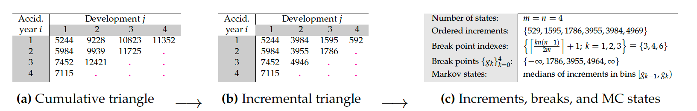
Thus, the resulting Markov states are: \(s_1 = 1062\) (i.e., the median of the first two increments, \(\{529, 1595\}\), from the first bin, \([-\infty, 1786)\); \(s_2 = 1786\) (which is the only increment in the second bin being \([1786, 3955)\)); \(s_3 = 3970\) (again the median of two increments, \(\{3955, 3984\}\), from the third bin); and, finally, \(s_4 = 4969\) which is the only increment in the last bin—the interval \([g_{3}, \infty)\). The transition matrix is estimated directly by counting the transitions between these four states.
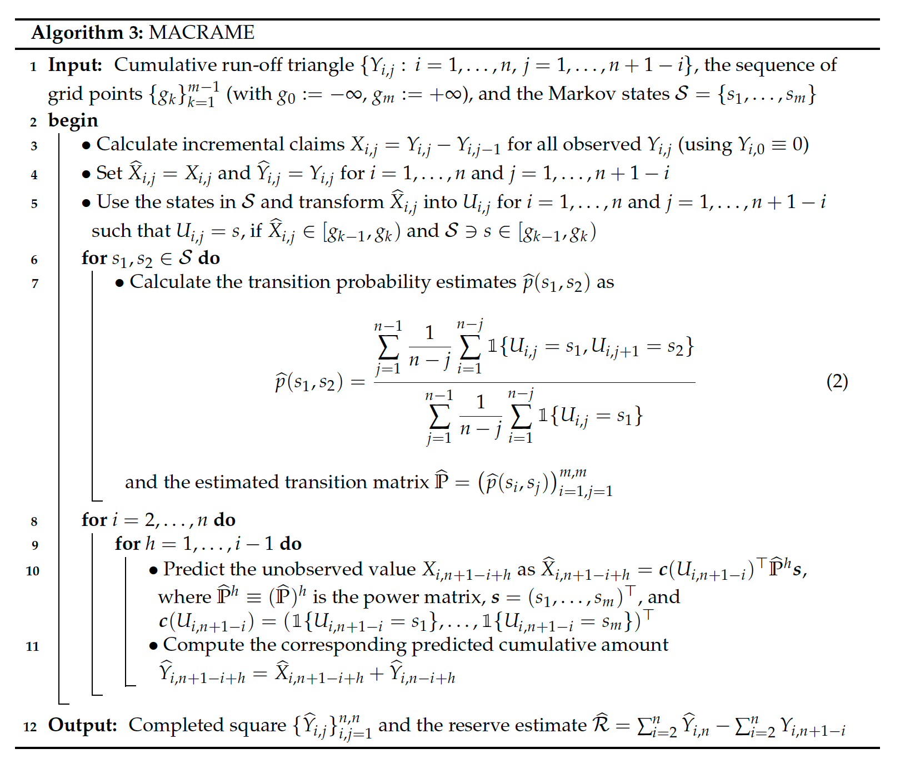
However, a user can specify the set of states
\(\mathcal{S} = \{s_1, \dots, s_m\}\) and the breaks \(\{g_k\}_{k = 0}^m\)
also differently; such alternative settings that lead to various
user-defined modifications of the underlying Markov chain process are
facilitated via the mcReserve() function and related functions. There are various
reasons why such modifications could be of interest in practice. For
atypical portfolios, standard parametric methods often do not apply:
While functional-based techniques are able to handle those, the reserve
prediction for portfolios with many zeros and small increments, for
instance, would underestimate the true reserve if, particularly, some
sudden claim amount increase is expected by actuarial experts (or vice
versa). Thus, alternative settings provide useful tuning options for
modeling rather atypical situations while also combining them with real
expectations.
Given the set of the Markov chain states in \(\mathcal{S}\) one can use the above formula in (2) to construct the empirical estimate \(\widehat{\mathbb{P}}\) for the unknown theoretical transition probability matrix \(\mathbb{P}\). In some situations (e.g., run-off triangles with extremely short developments—typical for certain portfolios related to material damages, for instance) it may be convenient to exaggerate the state in which the run-off triangle is already fully developed (i.e., there are only zero increments following after some development period). To this end, a transition probability matrix defined as a convex combination \(\widetilde{\mathbb{P}}:=(1-\delta_n)\widehat{\mathbb{P}}+\delta_n\mathbb{I}_0\) can be used; \(\widehat{\mathbb{P}}\) is the estimated transition matrix and \(\mathbb{I}_0\) is either a stochastic matrix with the column corresponding to the state \(0\in\mathcal{S}\) consisting of all ones and the remaining entries are zeros (if \(0\in\mathcal{S}\)), or it is a zero matrix otherwise. The data-driven mixing coefficient is defined to be \(\delta_n:= \frac{1}{n}\sum_{s\in\mathcal{S}}\widehat{p}(s,0)\) if \(0\in \mathcal{S}\) and set to zero if \(0\notin \mathcal{S}\).
Note that for triangles with not fully developed pay-off profiles (non-zero increments and thus \(0 \notin \mathcal{S}\), a common case in practice), \(\delta_n=0\) and therefore the estimate of the transition probability matrix \(\widehat{\mathbb{P}}\) in terms of (2) is used to drive the reserve estimation by the MACRAME algorithm.
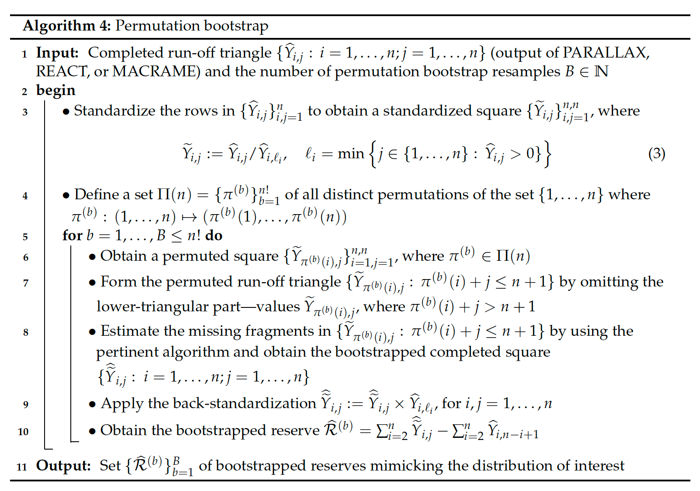
Distributional predictions: Resampling via permutation bootstrap
The reserve prediction \(\widehat{\mathcal{R}}\) for the unknown claims reserve \(\mathcal{R}\) provides only partial information in the entire loss reserving problem. In practice, a prediction of the whole reserve distribution is required too (for instance, by risk reserving assessment guidelines like Solvency II).
Classical techniques employ a residual (parametric or semiparametric) bootstrap approach (typically based on the back-fitted residuals) to emulate the distribution of interest—see, for instance, England and Verrall (1999), Pinheiro et al. (2003), or Maciak et al. (2022). However, for the functional-based claims reserving Maciak et al. (2022) proposed and theoretically justified a different strategy: permutation bootstrap. The prediction of the reserve distribution is still obtained via bootstrap resampling, but the algorithm avoids the use of residuals by resampling (permuting) the whole functional profiles. The rows of the completed run-off triangle produced by a certain algorithm—by each of those described above, but also any of the classical parametric reserving models implemented in the ChainLadder package—are treated as independent functional profiles. The completed triangle, the data matrix \(\{\widehat{Y}_{i,j}\}_{i,j=1}^{n,n}\), can be standardized: each row is divided by the first positive value within the row (considered from the left—which is, very likely, the first incremental payment in each row), as indicated in formula (3) in the description of Algorithm 4. The standardization step was proposed by Maciak et al. (2022) on the grounds that it is very typical in practice that the claims amounts paid in the first development period substantially increase over the years (possibly the effect of economical growth, inflation, more advanced or more expensive technology, etc.). The standardization is set as a default, but the user can suppress it if desiring so.
The resulting (standardized) square \(\{\widetilde{Y}_{i,j}\}_{i=1,j=1}^{n,n}\) is then resampled without replacement, in the row-wise manner. Formally speaking, for every permutation \(\pi^{(b)}:\,(1\ldots,n)\mapsto(\pi^{(b)}(1),\ldots,\pi^{(b)}(n))\), where \(b=1,\ldots,B\) such that \(\pi^{(b)}\neq\pi^{(s)}\) if \(b\neq s\), there is a new permuted square \(\{\widetilde{Y}_{\pi^{(b)}(i),j}\}_{i=1,j=1}^{n,n}\) and the initial estimation algorithm is applied again to the permuted run-off triangle \(\{\widetilde{Y}_{\pi^{(b)}(i),j}:\,\pi^{(b)}(i)+j\leq n+1\}\). After a possible back-standardization, the permuted bootstrap reserve \(\widehat{\mathcal{R}}^{(b)}\) is obtained and the set \(\{\widehat{\mathcal{R}}^{(b)}\}_{b = 1}^{B}\) is used to estimate the overall reserve distribution. See Algorithm 4.
3 ProfileLadder package for R
The package provides a toolbox for nonparametric reserving
techniques—the reserve point prediction algorithms PARALLAX, REACT,
and MACRAME, and the permutation bootstrap algorithm for the prediction
of the overall reserve distribution—together with a whole set of tools
for handling and preprocessing the data, exploratory analysis, or
confirmatory statistical inference. A list of key functions is given in
Table 1; apart from those listed there, the package
contains functions (such as plot(), print(), or summary()) corresponding to the (rather
standard generic) S3 methods implemented in the package. An integral
part of the package are numerous datasets—run-off triangles from
actuarial practice, suitable for illustration, validation, and
back-testing purposes. Some of the datasets are unique in this aspect:
dataset GFCIB, provided by the Guarantee Fund of the Czech Insurers’ Bureau
(GFCIB) and datasets CZ.casco, CZ.liability, and CZ.property provided by a major and market-leading
insurance company in the Czech Republic contain relatively large
(compared to other publicly available actuarial data) run-off triangles
(for example, GFCIB from the mandatory car insurance in the Czech Republic
contains \(60\) origins/quarters and \(60\) development periods—quarters
again). The triangles represent the claims developments from the
beginning of 2008 (1Q) up to the end of 2022 (4Q) while distinguishing
four different lines of business—i.e., four portfolios: bodily
injuries, material damages, provision payments, and annuities. On the
other hand, the datasets CZ.casco, CZ.liability, and CZ.property provide separate run-off triangles for
gross paid amounts and RBNS reserves (all with the dimensions
\(18 \times 18\)). For a complete overview refer to the package reference
manual available on CRAN.
| Function name | Function description |
|---|---|
as.profileLadder() |
function for defining an extended R class profileLadder to make work with the functional development profiles easier and more straightforward |
parallelReserve() |
function that implements two nonparametric, functional-based reserve prediction algorithms, PARALLAX and REACT |
mcReserve() |
implements the MACRAME algorithm while also allowing for various user-based modifications and explicitly defined Markov Chain process |
permuteReserve() |
function for estimating the overall reserve distribution in terms of the permutation bootstrap (for parametric and nonparametric reserving) |
incrExplor() |
provides an exploratory analysis of the run-off triangle increments in order to set the Markov chain states and breaks for mcReserve() |
mcBreaks() |
function to access the break points \(\{g_k\}_{k = 0}^m\) used to define the bins for the run-off triangle increments in the mcReserve() function |
mcStates() |
function to access the Markov chain states \(\mathcal{S} = \{s_1, \dots, s_m\}\) representing the bins with the run-off triangle increments in the mcReserve() function |
mcTrans() |
function to access the estimated transition probability matrix \(\widehat{\mathbb{P}}\) used by the MACRAME algorithm implemented in mcReserve() |
PARALLAX and REACT
Algorithms PARALLAX and REACT are similar and relatively
straightforward. The same also applies for the parallelReserve() function that implements
both these algorithms. Using the illustrative data from
Figure 1, the reserve
prediction provided by the PARALLAX or REACT algorithm can be obtained
by the R commands
R> library("profileLadder")
R> data(CameronMutual, package = "profileLadder")
R> parallax <- parallelReserve(CameronMutual, method = "parallax")
R> react <- parallelReserve(CameronMutual, method = "react", residuals = TRUE)The PARALLAX algorithm is used as the default option in parallelReserve() and, therefore,
no specification in terms of method = "parallax" is actually needed. The output of the parallelReserve()
function is a list (of the S3 method class profileLadder) with a few different
elements (for a comprehensive description of all items we refer to the R
help session that can be obtained in a standard way by typing help("parallelReserve")).
Nevertheless, the most important part of the output is the predicted
reserve \(\widehat{\mathcal{R}}\) (the list element $reserve) and the full
completed run-off triangle—contained in the list element $FullTriangle (note the
analogy with the ChainLadder package). Both pieces of information are automatically
provided by the print() method as the output:
R> parallax
PARALLAX Reserving
Estimated Reserve Estimated Ultimate Paid Amount True Reserve
8540 113699 105159 7963
dev
origin 1 2 3 4 5 6 7 8 9 10
1 5244 9228 10823 11352 11791 12082 12120 12199 12215 12215
2 5984 9939 11725 12346 12746 12909 13034 13109 13113 13113
3 7452 12421 14171 14752 15066 15354 15637 15720 15724 15724
4 7115 11117 12488 13274 13662 13859 13872 13947 13951 13951
5 5753 8969 9917 10697 11135 11282 11320 11399 11415 11415
6 3937 6524 7989 8543 8757 8904 8942 9021 9037 9037
7 5127 8212 8976 9325 9539 9686 9724 9803 9819 9819
8 5046 8006 8984 9333 9547 9694 9732 9811 9827 9827
9 5129 8202 8966 9315 9529 9676 9714 9793 9809 9809
10 3689 6276 7741 8295 8509 8656 8694 8773 8789 8789
A fancy version of the print method is used by default which is particularly convenient when working with the run-off triangle shaped data—for instance, compare the following (outputs omitted)
R> print(as.profileLadder(observed(CameronMutual)), fancy.print = TRUE)
R> print(as.profileLadder(observed(CameronMutual)), fancy.print = FALSE)but this option can be either altered by the command set.fancy.print()—for which we
only refer to the R help session for more details—or it can be fully
suppressed by using global options by calling the command
R> options(profileLadder.fancy = FALSE)The overall (predicted) reserve, reported as Estimated Reserve, can be also obtained
directly from the completed run-off triangle (in the output above) as
\(\widehat{\mathcal{R}} = \sum_{i = 2}^n \widehat{Y}_{i,n} - \sum_{i = 2}^n Y_{i, n + 1 - i}\).
Some additional quantitative characteristics are also provided: Estimated Ultimate
represents the sum of the last column—the ultimate cumulative payment
developments \(\sum_{i = 1}^{n} \widehat{Y}_{i, n}\); Paid Amount gives the amount
that was already settled by the insurance company—i.e., the sum of the
last running diagonal, \(\sum_{i = 1}^{n} Y_{i, n + 1 - i}\); Finally, the
true reserve (provided only in situations in which a fully observed
run-off triangle is available as an input) is reported as True Reserve. Analogous
output, however with different predicted reserve (which is \(8358\)) and
different completed profiles, is obtained for the REACT algorithm
(explicit output is, for brevity, omitted). For a comparison, the CameronMutual
reserve prediction for the run-off triangle provided by the standard
(parametric) over-dispersed Poisson model (ODP) implemented in the R
function glmReserve() from the package ChainLadder is \(8601\). Thus, just in terms of the
prediction accuracy, both nonparametric methods outperform the classical
(benchmark) actuarial approach in this particular case.
However, note that the REACT algorithm above is fitted with the
additional parameter option residuals = TRUE (which works regardless of the method choice). This
provides a set of residuals in the output. There are actually two sets
of residuals that can be provided in the output (however, not
simultaneously) depending on the input triangle type. Standard
(incremental) residuals, defined as \(X_{i,j} - \widehat{X}_{i,j}\) for
\(i = 2, \dots, n\) and \(j = n - i + 2, \dots, n\), where \(X_{i, j}\) is the
“future” increment (if known) and \(\widehat{X}_{i,j}\) is the predicted
counterpart, are provided if a full triangle (data matrix) is available
as the input (thus, the “future” payments are supposed to be known). On
the other hand, if there is a standard run-off triangle provided as the
input, the so-called “back-fitted” residuals are calculated using
an approach that is well-known in the actuarial and finance circles as
a back-fitting approach (see, for instance, Popescu and Suciu (2020)
or Maciak et al. (2022) for further details). The main idea behind the
back-fitted residuals is to use a flipped1 completed triangle as
an input and to back-predict the run-off triangle by applying the same
estimation procedure in a reverse manner so to say. Both sets of
residuals can be used in a straightforward way for some further
empirical inspection and analysis (which is typically performed and
often also required by regulators when applying classical parametric
methods).
The summary method applied to an R object of the class profileLadder —the output
from the parallelReserve() function for instance—provides a complex overview (by
adopting an analogous layout as the one already used in the main
actuarial R package ChainLadder.
R> summary(react)
REACT reserve prediction (by origins)
First Latest Dev.To.Date Ultimate IBNR
2 5984 13113 1.0000000 13113 0
3 7452 15720 0.9997456 15724 4
4 7115 13872 0.9937675 13959 87
5 5753 11282 0.9912142 11382 100
6 3937 8757 0.9725677 9004 247
7 5127 9325 0.9528919 9786 461
8 5046 8984 0.9172963 9794 810
9 5129 8202 0.8210210 9990 1788
10 3689 3689 0.4314620 8550 4861
total 49232 92944 0.9174942 101302 8358Overall reserve summary
Est.Reserve Est.Ultimate Paid Amount True Reserve Reserve%
8358.00 113517.00 105159.00 7963.00 4.96 Residual summary (standard incremental residuals)
Min 1st Q. Median Mean 3rd Q. Max Std.Er.
-719 -49 -1 -9 34 300 143
Total number of residuals: 45, Total number of unique residuals: 41
Suspicious residuals (using 2sigma rule): 2, Outliers (3sigma rule): 1The first part of the output is basically an analogy of the output
provided by the summary() function when being applied to an output of some
estimation method implemented in the R package ChainLadder (the Over-dispersed
Poisson model in glmReserve() for instance). It provides a detailed overview of the
ultimate payments and the corresponding reserves by origins.
R> library("ChainLadder")
R> summary(glmReserve(observed(CameronMutual)))
Latest Dev.To.Date Ultimate IBNR S.E CV
2 13113 1.0000000 13113 0 0.01035287 Inf
3 15720 0.9992372 15732 12 29.38975320 2.4491461
4 13872 0.9934116 13964 92 73.46098788 0.7984890
5 11282 0.9850694 11453 171 96.26787355 0.5629700
6 8757 0.9688019 9039 282 120.58781735 0.4276164
7 9325 0.9397360 9923 598 177.57019068 0.2969401
8 8984 0.8905630 10088 1104 246.00693847 0.2228324
9 8202 0.7789914 10529 2327 379.54811405 0.1631062
10 3689 0.4788422 7704 4015 622.22022041 0.1549739
total 92944 0.9152986 101545 8601 880.66723938 0.1023913The function observed() used above (implemented in the package ProfileLadder) transforms the
full data matrix CameronMutual into a run-off triangle with the lower-right triangular
part containing NA values only (as required by the glmReserve() function). Note that
unlike PARALLAX and REACT the ODP model in glmReserve() imposes a distributional
assumption and, therefore, the estimated standard errors (S.E.) and
coefficients of variation (CV) can be provided in the output. On the other
hand, the summary of the enriched profileLadder class object provides, in addition,
the first cumulative payments in the first column which is often used by
practitioners to assess the over-time stability of the given portfolio
(and, as already mentioned above, it may play some role in the following
permutation bootstrap resampling).
The second part of summary(react) above provides the same quantitative information
about the estimated reserve as before (Estimated Reserve, Estimated Ultimate, Paid Amount and True Reserve) but, in addition, there
is also a quantification of the prediction precision in terms of Reserve% defined
in Maciak et al. (2022) as
\[\texttt{Reserve\%} = 100 \times \Big| \frac{\widehat{\mathcal{R}}}{\mathcal{R}} - 1 \Big|.\]
Note that the value can be provided only in situations when the true
reserve—the lower triangular part—is available. The last part of the
summary output refers to (standard or backfitted) residuals—if the
residuals are asked for in the output. Analogous summary is also
provided for back-fitted residuals that are calculated in situations
where only the run-off triangle itself is given as the input—which can
be achieved by the observed() function as
R> summary(parallelReserve(observed(CameronMutual), method="react", residuals=TRUE))The summary() function can be also used to plot a histogram of the residuals
(using the parameter plotOption = TRUE) supplemented with a nonparametric estimate of the
underlying density. A simple barplot of the paid amount, estimated
ultimate, estimated reserve, and the true reserve is plotted if no
residuals are available.
The R object of the class profileLadder can be visualized with a generic plot() function.
Moreover, if the run-off triangle itself is also of the class profileLadder the plot()
function can be also used to plot the functional profiles of the run-off
triangle itself. The R code
R> plot(as.profileLadder(CameronMutual))
R> plot(parallelReserve(CameronMutual))provides both plots in Figure 2. The same functionality of both generic R functions (summary()
and plot()) is, of course, provided regardless of the prediction method that
is used (PARALLAX or REACT) when calling the parallelReserve() function or the MACRAME
algorithm implemented in the mcReserve() function—see below.

plot(as.profileLadder(CameronMutual))
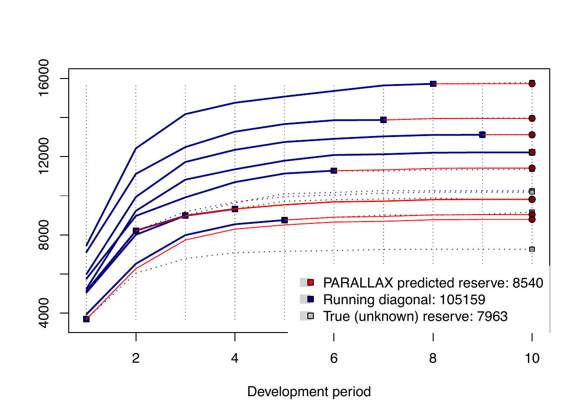
plot(parallelReserve(CameronMutual))
plot() applied to the object of the class profileLadder. For a
“completed” triangle (data matrix), the function also plots the future “unobserved” fragments (blue dotted lines) and true “unknown” reserve. The predicted functional profiles (red solid lines in the right panel) are provided if plot() is applied to the output of some parallelReserve() or mcReserve().
MACRAME
Let us recall
that the MACRAME algorithm—as proposed in Maciak et al.
(2022)—utilizes an underlying Markov chain mechanism to drive the
prediction of the overall reserve \(\mathcal{R}\). Due to the data
availability (typically there are only 10 – 15 origin years available
in run-off triangles in practice which means that there are only about
55 – 120 incremental payments in total), the underlying Markov chain is
assumed to be a homogeneous stochastic process. However, there are still
relatively many different parameters which need to be properly defined
(e.g., the set of the increments, the states of the Markov chain, or the
transition probability matrix) and some user-based interference can be
of some interest here. The MACRAME algorithm, as originally proposed in
Maciak et al. (2022), utilizes a fully automatic (data driven) approach
to define the set of the Markov chain states
\(\mathcal{S} = \{s_1, \dots, s_m\}\) and the corresponding break points
\(\{g_k\}_{k = 0}^m\). Nevertheless, the implementation of the algorithm
in the R function mcReserve() provides users with various options—starting with a
pre-specified number of the Markov states to be required, selecting the
method how the run-off triangle increments are summarized into the
states, or even providing a fully manual specification of the states
\(\mathcal{S} = \{s_1, \dots, s_m\}\), breaks \(\{g_k\}_{k = 0}^m\), or a
subset of increments to be considered. These options are all summarized
in Table 2.
The default performance of the mcReserve() function corresponds with the data-driven
selection of the states and breaks—in line with the original MACRAME
algorithm proposed in Maciak et al. (2022). Considering again the
CameronMutual dataset, the MACRAME predicted reserve is obtained by
R> macrame <- mcReserve(CameronMutual)The output of the mcReserve() function is again the R object of the class ProfileLadder and it is
analogous to the output of the parallelReserve() function already described before. For
brevity, we omit repeating the same details again. However, specific
information related to the underlying Markov chain in the MACRAME
algorithm can be also obtained by using various Markov chain (mc)
accessor functions (mcBreaks(), mcStates(), or mcTrans()). For instance,
R> mcBreaks(macrame)
[1] -Inf 75 147 288 388 554 780 1465 2587 3955 Infprovides the (default) set of break points \(\{g_k\}_{k = 0}^m\) and
R> mcStates(macrame)
[1] 13.0 81.0 197.0 302.5 438.0 601.0 948.0 1672.5 3073.0 3993.0gives the (default) set of the corresponding Markov chain states \(\mathcal{S} = \{s_1, \dots, s_m\}\) such that exactly one state lies between two consecutive break points. The estimate of the transition matrix \(\widehat{\mathbb{P}}\) can be obtained by
R> mcTrans(macrame)
[,1] [,2] [,3] [,4] [,5] [,6] [,7] [,8] [,9] [,10]
[1,] 0.5000 0.5000 0.0000 0.0000 0.00 0.00 0.00 0.00 0 0
[2,] 0.6667 0.3333 0.0000 0.0000 0.00 0.00 0.00 0.00 0 0
[3,] 0.3333 0.6667 0.0000 0.0000 0.00 0.00 0.00 0.00 0 0
[4,] 0.3333 0.0000 0.3333 0.3333 0.00 0.00 0.00 0.00 0 0
[5,] 0.0000 0.0000 0.6000 0.2000 0.20 0.00 0.00 0.00 0 0
[6,] 0.0000 0.0000 0.2500 0.5000 0.25 0.00 0.00 0.00 0 0
[7,] 0.0000 0.0000 0.0000 0.0000 0.50 0.00 0.50 0.00 0 0
[8,] 0.0000 0.0000 0.0000 0.0000 0.25 0.75 0.00 0.00 0 0
[9,] 0.0000 0.0000 0.0000 0.0000 0.00 0.25 0.50 0.25 0 0
[10,] 0.0000 0.0000 0.0000 0.0000 0.00 0.00 0.25 0.75 0 0Generic functions plot() and summary() can be both applied to the output in the same way as it was done in case of the parallelReserve() function.
In order to provide some useful insight into the structure of the incremental run-off triangle and to offer some visual inspection for various user-based modifications of the underlying Markov chain in the mcReserve() function,
there is another software tool implemented in the ProfileLadder package. The R function incrExplor() takes the run-off triangle as an input (fully observed or not, incremental or cumulative) and returns a complex empirical exploration of the incremental payments.
Recall that the original MACRAME algorithm (as proposed in Maciak et al. (2022) does not take into account the first year payments, values \(X_{i,1}\) for \(i = 1, \dots, n\), when defining the grid points \(\{g_k\}_{k = 0}^m\) and the corresponding Markov states in \(\mathcal{S}\). The reason is that most run-off triangles occurring in the real-world actuarial practice have substantially decreasing incremental payment profiles over the consecutive development periods (meaning that \(X_{i,j} \to 0\) as \(j \to \infty\)) and, in order to achieve efficient reserve prediction, it is more substantial to model
the tail increments within each row rather than capturing relatively large amounts of the first year (origin) payments.
This can be changed by a user.
A default functionality of the incrExplor() function is to provide the data-driven set of bins (the break points respectively) and the corresponding Markov states for the underlying run-off triangle. The first year payments are not considered (i.e., out = 1 is used by default). Taking the CameronMutual dataset again, the function provides the following output:
R> print(runoff.exploratory <- incrExplor(CameronMutual, out = 1))Data-driven (default) setting of the Markov Chain in MACRAME
MC States: 13 81 197 302.5 438 601 948 1672.5 3073 3993Corresponding bins for the run-off triangle increments
[1] "[-Inf, 75)" "[75, 147)" "[147, 288)" "[288, 388)" "[388, 554)"
[6] "[554, 780)" "[780, 1465)" "[1465, 2587)" "[2587, 3955)" "[3955, Inf)" Note that all Markov states and also the bins for incremental payments correspond with the Markov states and the breaks already obtained by mcStates() and mcBreaks() from the output of the function mcReserve(). However, the output from the incrExplor() function is a complex object of the S3 class mcSetup. For more details we again refer to the R help session.
Nevertheless, the summary method applied to the object of the class mcSetup—the output from incrExplor() provides the following details:
R> summary(runoff.exploratory)Input triangle type: Cumulative
Summary of the increments
Min 1st Q. Median Mean 3rd Q. Max Std.Er.
Raw increments 0 197.0000 529.0000 1126.0000 1595.000 4969 1340.0000
Std. increments 0 0.0396 0.1065 0.2267 0.321 1 0.2697
Total number of increments: 45, Total number of unique increments: 45
Number of suspicious increments (using 2sigma rule): 8, Outliers (3sigma rule): 1
Data-driven bins for the run-off triangle increments
[1] "[-Inf, 75)" "[75, 147)" "[147, 288)" "[288, 388)" "[388, 554)"
[6] "[554, 780)" "[780, 1465)" "[1465, 2587)" "[2587, 3955)" "[3955, Inf)"
Markov Chain states (medians of the increments within each bin)
[1] 13.0 81.0 197.0 302.5 438.0 601.0 948.0 1672.5 3073.0 3993.0Graphical visualization is provided in a standard way using the plot()
function. Both panels in Figure 3 are produced by the R command
R> plot(runoff.exploratory)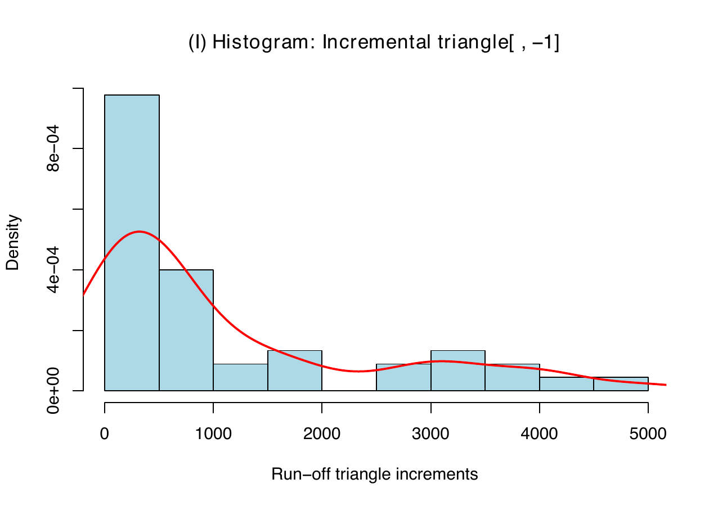
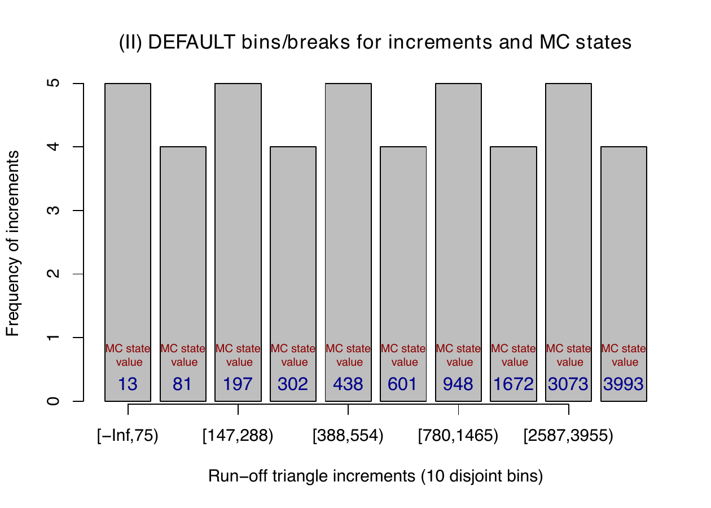
.
If there is a specific interest to also include the first year payments when defining the Markov chain states and the corresponding break points (or, alternatively, to exclude some other columns with the incremental payments), an additional parameter out = 1 can be changed correspondingly—the DEFAULT value (one) stands for the first year increments
that are typically not considered; the choice out = 0 uses all available increments \(X_{i,j}\), for \(i = 1, \dots, n\) and \(j = 1, \dots, n + 1 - i\); in order to exclude, for example, first three columns, the parameter can be specified as out = c(1,2,3). The change of this parameter is also reflected by the output of incrExplor() which, in addition, contains analogous information as before, however, for a user-modified subset of the incremental payments.
R> print(runoff.exploratory.all <- incrExplor(CameronMutual, out = 0))Data-driven (default) setting of the Markov Chain in MACRAME
MC States: 13 81 197 302.5 438 601 948 1672.5 3073 3993
Corresponding bins for the run-off triangle increments
[1] "[-Inf, 75)" "[75, 147)" "[147, 288)" "[288, 388)" "[388, 554)"
[6] "[554, 780)" "[780, 1465)" "[1465, 2587)" "[2587, 3955)" "[3955, Inf)"
[User-modified MC setting]{style="color:magenta;"}
```r
MC States: 14.5 125 285.5 400 601 978 2186.5 3689 5007.5 5984
Corresponding bins for the run-off triangle increments
[1] "[-Inf, 79)" "[79, 197)" "[197, 349)" "[349, 529)" "[529, 786)"
[6] "[786, 1595)" "[1595, 3085)" "[3085, 3984)" "[3984, 5244)" "[5244, Inf)"
Development periods (run-off triangle columns) not considered: 0
Method selected to summarize the increments within each bin: DEFAULT (median)The summary() function applied on the runoff.exploratory.all object returns analogous information as before but the output refers to the user-defined subset of increments rather than the default set. For illustration,
Figure 4
is obtained for all run-off triangle increments
\(\{X_{i,j};~i = 1, \dots n, j = 1, \dots, n + 1 - i\}\), using the R
command
R> plot(runoff.exploratory.all)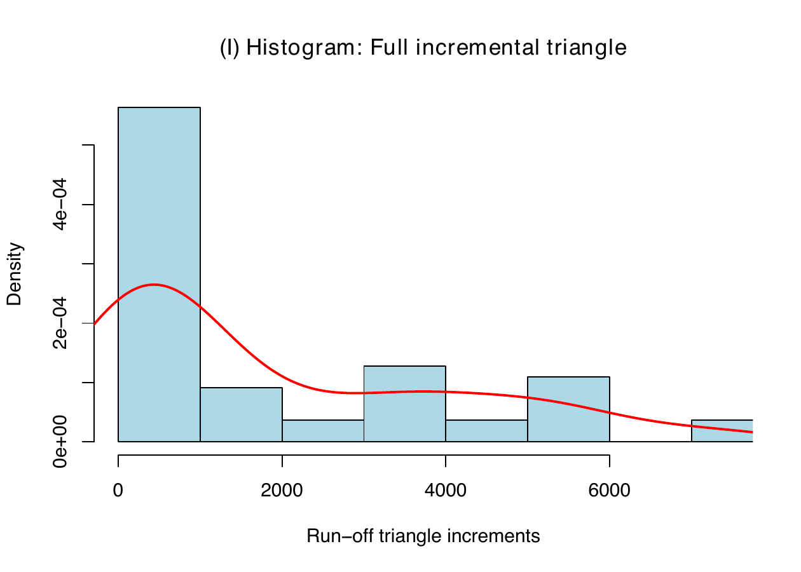
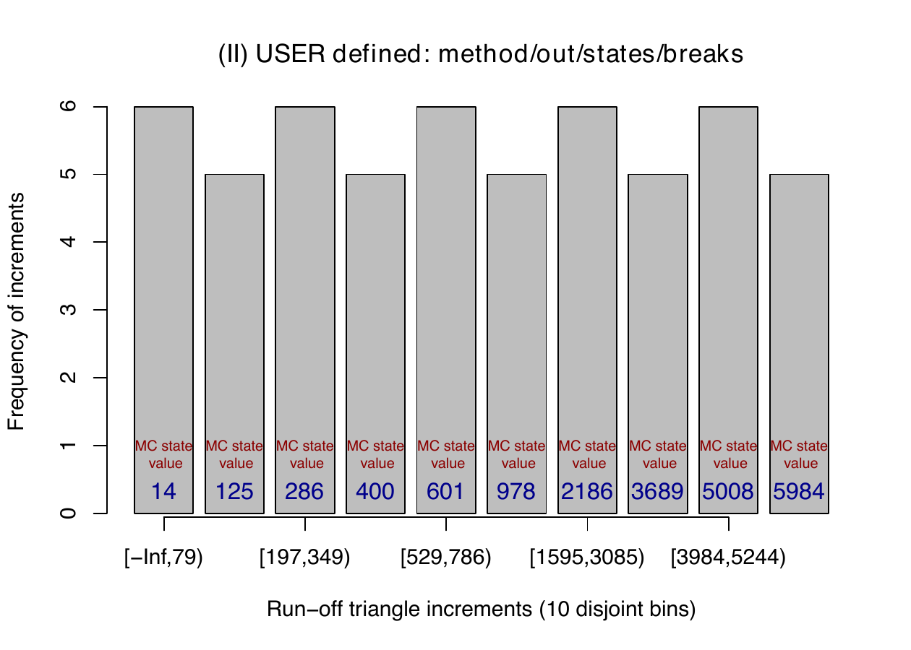
Note that the Markov chain states and the corresponding break points are
also affected by the choice out = 0 and this change is reflected now in
Panel (II) in Figure 4 (compare with the same panel in
Figure 3).
The corresponding data-driven Markov states and the breaks are directly
accessible by using the accessor methods
R> mcBreaks(runoff.exploratory.all)
[1] -Inf 79 197 349 529 786 1595 3085 3984 5244 Inf
R> mcStates(runoff.exploratory.all)
[1] 14.5 125.0 285.5 400.0 601.0 978.0 2186.5 3689.0 5007.5 5984.0Three other parameters can be specified by a user in the incrExplor() function. The first one is the method parameter which defines the way how the increments within each bin are summarized to obtain the final Markov state values. By default, the Markov states are calculated as the medians of the increments within each bin (method = "median"). The method can be changed to the average (method = "mean"), the minimum increment from the bin (method = "min"), or the maximum increment respectively (method = "max").
Another parameter that can be used to modify the underlying setting of the Markov chain behind the MACRAME prediction is the parameter states (which is set to NULL by default). This parameter sets the Markov states either by
providing some specific integer value for the number of states (e.g., states = 5, as in Example 1) while everything else is determined in a data-driven manner proposed in Maciak et al. (2022) or an explicit vector of states can be given instead (e.g., states = c(500, 1000, 1500, 2000, 2500) in Example 2) to enforce not only five states but also their explicit values (with the corresponding break points being the midpoints between the provided states).
Finally, the last parameter that can be used within the incrExplor() function is the breaks parameter (set to NULL by default). This parameter can either take the default value NULL or it can be a vector of explicit break points \(\{g_k\}_{k = 0}^m\). Different combinations of the values of these parameters (states and breaks in particular) result in different performance of the incrExplor() function and, consequently, also the mcReserve() function. For clarity, a complex description is provided in Table 2. The same functionality of the parameters method, states, and breaks also applies when calling the mcReserve() function to predict the reserve by the MACRAME algorithm.
| MACRAME: USER based setting | states = ... |
breaks = ... |
performance: incrExplor() & mcReserve() |
|---|---|---|---|
NULL |
NULL |
DEFAULT (fully data-driven) | |
| 1. | numeric |
any value for breaks is ignored |
same as DEFAULT (data-driven) but the number of states is enforced |
| 2. | c( ... ) |
NULL |
Markov chain states explicitly defined by states = c( ... ) while the corresponding bins for the run-off increments are set as the midpoints between the user-provided states |
| 3. | NULL |
c( ... ) |
explicit breaks in breaks = c( ... ) are used to form the bins for the increments and the states are obtained by summarizing the increments within each bin by using the method option |
| 4. | c( ... ) |
c( ... ) |
Markov chain states explicitly defined by states = c( ... ) with the bins for the run-off increments being also user-defined by breaks = c( ...) (each bin in breaks must contain one state) |
In practice, the incrExplor() function is supposed to be used to perform a detailed exploratory of various settings of the underlying Markov chain required by the mcReserve() function. Once the set of breaks is established and the corresponding Markov states are derived, the output from the incrExplor() function can be directly forwarded as a~part of the input for the mcReserve() function. For illustration, the default performance of the MACRAME algorithm obtained by
R> mcReserve(CameronMutual)and somehow more complex and more explicit specification of the states
and breaks—however, all by using the default data-driven approach in
the incrExplor() function—in terms of
R> user.states <- mcStates(incrExplor(CameronMutual))
R> user.breaks <- mcBreaks(incrExplor(CameronMutual))and directly supplemented into the mcReserve() function by using the additional parameters states and breaks as
R> mcReserve(CameronMutual, states = user.states, breaks = user.breaks)provide two identical outputs and the same reserve prediction \(\widehat{\mathcal{R}}\). For some more detailed illustration of different settings of the incrExplor() function and, consequently, the mcReserve() function there are four specific examples provided below together with the corresponding graphical outputs.
Example 1
Let us start with the simplest modification that can be used for both
the incrExplor() and mcReserve() functions (Case 1 in Table 2). The number of the Markov chain states (by
default, the number of states \(m \in \mathbb{N}\) is equal to the number
of origins, \(n \in \mathbb{N}\)) can be changed by the parameter states. In the
R code below, there are five Markov chain states specified, the
parameter breaks is ignored, and the break points and states are derived in a
data-driven manner. The following code
R> plot(incrExplor(CameronMutual, states = 5))
R> plot(mcReserve(CameronMutual, states = 5))performs the exploratory analysis of the run-off triangle increments (in
terms of the standard output already described above) including the
graphical visualization—see Figure 5—and, consequently, the reserve is obtained by the
mcReserve() function while using the same five states—see
Figure 5b for the
corresponding completed profiles. Note that five Markov chain states are
enforced but, otherwise, the run-off triangle increments are summarized
analogously—they are split uniformly into five bins and the
corresponding Markov states are obtained by using the median values of
the increments within each bin (default method). The predicted reserve
is slightly worse than the one obtained by the default setup of the
MACRAME algorithm (which gives the predicted reserve roughly
\(\widehat{\mathcal{R}} = 8082\) while the prediction with only five
Markov states produces \(\widehat{\mathcal{R}} = 8620\) with the true
“unknown” reserve being \(\mathcal{R} = 7963\)). Nevertheless, it can be
sometimes useful to manually control (and lower) the amount of the
Markov states that are used for the prediction.
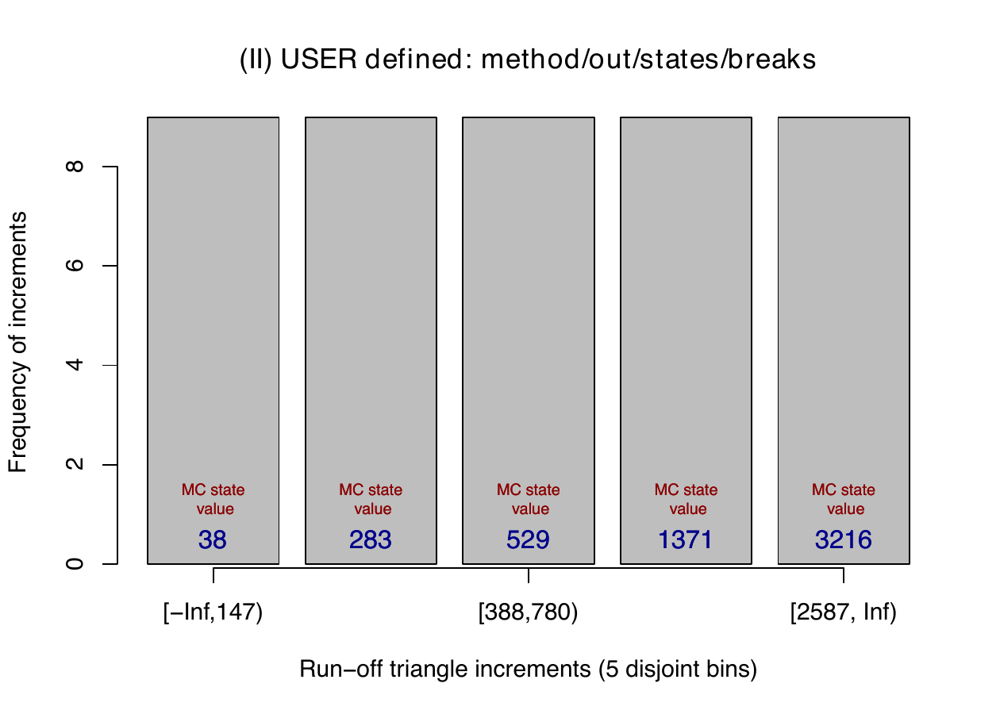
plot(incrExplor(CameronMutual, states = 5))
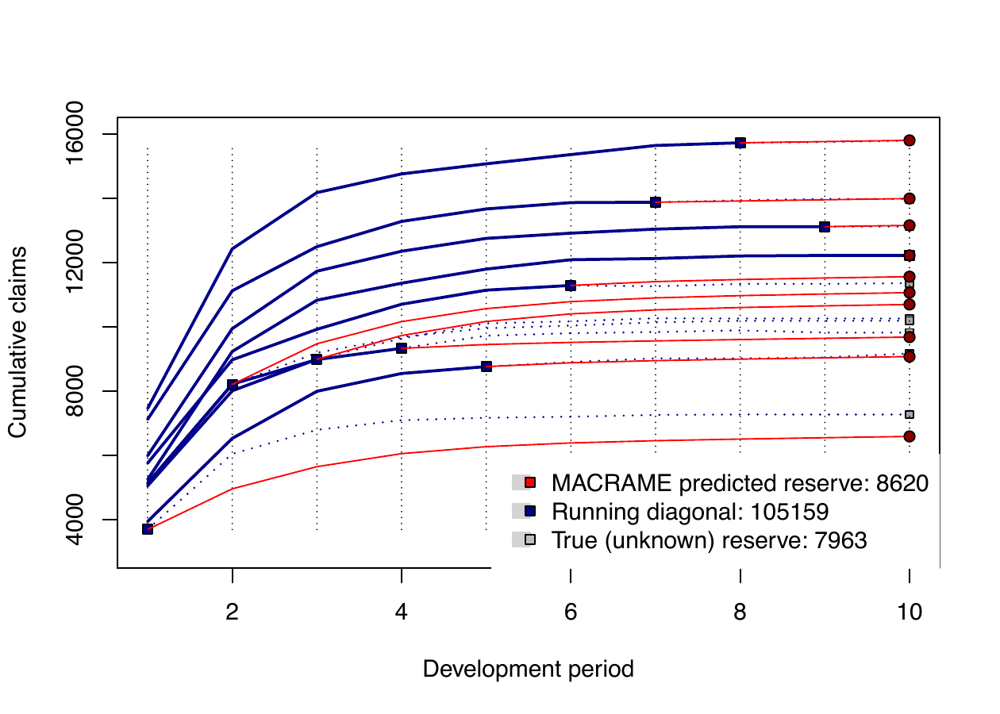
plot(mcReseve(CameronMutual, states = 5))
Example 2
The parameter states also allows for an explicit definition of the Markov
states for both incrExplor() and mcReserve(). In such case (Scenario 2 in
Table 2),
the corresponding break points \(\{g_{k}\}_{k = 1}^{m - 1}\) are defined
as the mid-points between the specified state values (which must be all
unique). In addition, it holds that \(g_0 = - \infty\) and
\(g_m = \infty\). Similarly as in Example 1, the R code below provides the
exploratory analysis of the run-off triangle increments, but instead of
specifying just the number of states to be used, explicit Markov chain
states are enforced by using states = c(500, 1000, 1500, 2000, 2500). The MACRAME algorithm uses the same set
of states (and breaks) for the consequent reserve prediction. Note that
as far as the explicit states are provided, any option of the parameter
method = "..." in the incrExplor() function is irrelevant and, therefore, ignored. Analogous
graphical outputs provided in Figure 6 are produced by the R commands
R> user.states <- c(500, 1000, 1500, 2000, 2500)
R> plot(incrExplor(CameronMutual, states = user.states))
R> plot(mcReserve(CameronMutual, states = user.states))Comparing Figure 5a (with states = 5
) and Figure 6a (with states = c(500, 1000, 1500, 2000, 2500)),
it is quite obvious that the numeric specification of the number of
states preserves a uniform allocation of the increments in the bins (if
possible). However, with the explicit states specification (and the
break points \(\{g_k\}_{k = 1}^{m - 1}\) being determined as the
mid-points between the states) such uniform distribution is not
(generally) possible any more and, therefore, relatively large variation
is observed among the bars in Figure 6a.
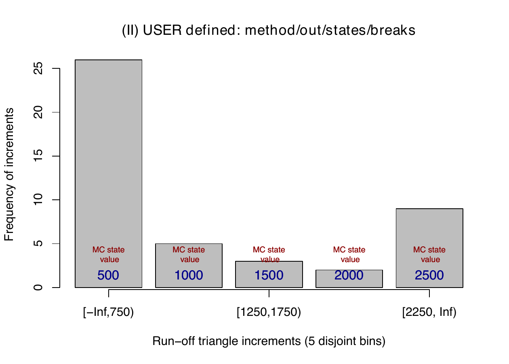
plot(incrExplor(CameronMutual, states = user.states))
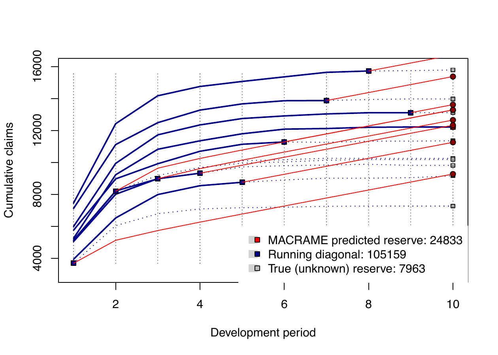
plot(mcReseve(CameronMutual, states = user.states))
states = c(500, 1000, 1500, 2000, 2500). The increments are not distributed uniformly across the bins
any more and relatively poor performance of the MACRAME algorithm is
also observed in the completed profiles on the right (the predicted
reserve heavily overestimates the true reserve due to almost no Markov
chain states that would properly model the development
tails).
The Markov chain states in Figure 6a (blue bold values within the bars) indeed correspond
with the declaration of the states provided by states = c(500, 1000, 1500, 2000, 2500). Thus, there are again
five bins for the run-off triangle increments but the bins are now more
restricted. As a result, the development tails of the run-off triangle
are approximated very roughly (note that there are more than 25
increments in the first bin) and, therefore, the reserve is (not
surprisingly) heavily overestimated (compare
Figure 6b with
Figure 5b).
Example 3
Instead of enforcing the Markov chain states one can also pre-specify
the set of breaks \(\{g_k\}_{k = 0}^m\) that are used to form the bins for
the run-off triangle increments (Case 3 in
Table 2).
The corresponding states are obtained by summarizing the increments
within the bins (either by using the default median method or by
specifying other options with the method parameter). The following R code uses
again five bins defined by four grid points and the corresponding Markov
states are obtained as the medians of the increments within the bins.
R> user.breaks <- c(500, 1000, 1500, 2000)
R> plot(incrExplor(CameronMutual, breaks = user.breaks))
R> plot(mcReserve(CameronMutual, breaks = user.breaks))Both plots are provided in Figure 7. It is also worth mentioning that if the specified
break points \(\{g_k\}_{k = 1}^{m - 1}\) define some empty bin with no
increment within the bin, then two neighboring bins are automatically
merged in a way that each bin contains at least one increment. More
formally, if there is no increment in the bin \([g_k, g_{k + 1})\) for
some \(k \in \{1, \dots, m - 1\}\) then a new bin defined as
\([g_{k - 1}, g_{k + 1})\) is used instead. Similarly, if there is no
increment in the first bin \((g_0, g_1)\), where \(g_0 = -\infty\), then the
first bin is re-defined as \((-\infty, g)\), where
\(g = min_{\{2 \leq k \leq m\}}\{g_k;~g_k > min{\{X_{i,j}:~ 1 \leq i \leq n, 2 \leq j \leq n - i + 1\}}\}\).
Thus, it is also possible, for some rather atypical run-off triangles,
that there is only one bin used for all (typically zero) increments (no
matter what is specified by states or breaks) and the underlying Markov chain process
has only one (typically zero) state, i.e.,
\(|\mathcal{S}| = |\{s\}| = 1\).
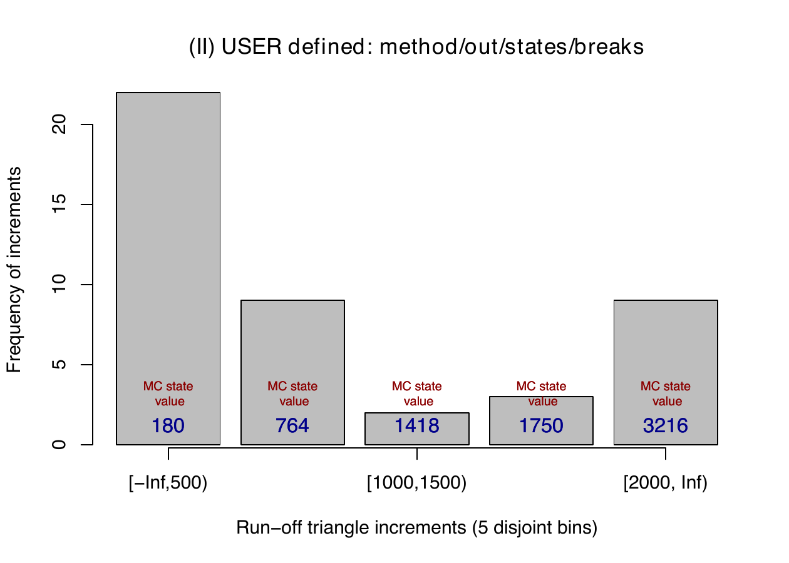
plot(incrExplor(CameronMutual, breaks = user.breaks))
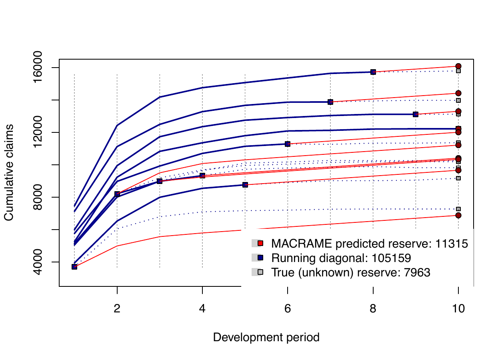
plot(mcReseve(CameronMutual, breaks = user.breaks))
CameronMutual dataset with an explicit specification of the
breaks by using breaks = c(500, 1000, 1500, 2000). The corresponding completed profiles are on the
right-hand side. The predicted reserve is \(\widehat{\mathcal{R}} = 11315\).
Example 4
Finally, we briefly address one more important modification of the
underlying Markov chain. Note that the choice of the summary method
(i.e., method = c("median", "mean", "min", "max")) is only applicable for the incrExplor() function. The mcReserve() function only allows
one to specify the set of breaks and the set of states. This is however
not limiting in practice.
The R code below specifies the user-based choice for breaks (i.e., breaks = c(500, 1000, 1500, 2000))
and, also, the user selected method how the increments within each bin
are supposed to be summarized (i.e., method = "min"). The corresponding Markov chain
states are calculated by the incrExplor() function and, together with the
pre-specified breaks, they can be both forwarded to the mcReserve() function by
using the mcStates() accessor and both parameters breaks and states (Case 4 in
Table 2).
R> user.breaks <- c(500, 1000, 1500, 2000)
R> user.method <- incrExplor(CameronMutual, breaks = user.breaks, method = "min")
R> final.states <- mcStates(user.method)
R> mcReserve(CameronMutual, breaks = user.breaks, states = final.states)The explicit outputs and plots are omitted for brevity. Note that if
functions incrExplor() and mcReserve() are used with an explicit specification of both the set
of breaks2 \(\{g_k\}_{k = 1}^{m - 1}\) and the set of states
\(\mathcal{S} = \{s_1, \dots, s_m\}\) then the Markov states provided in states = c( ... )
must represent a valid sequence of unique values such that exactly one
state value belongs to exactly one bin determined by the break points
\(-\infty = g_0 < g_1 < \dots < g_{m - 1} < g_m = \infty\).
Permutation bootstrap
The third key function implemented in the ProfileLadder package—providing the overall reserve distribution
for functional-based reserving methods but also for traditional
parametric approaches already available in the ChainLadder package—is the permuteReserve()
function. The function performs the permutation bootstrap for all
possible reserving algorithms (e.g., Mack model, Tweedie model, GLM
based reserving, PARALLAX, REACT, or MACRAME) with no explicit need to
specify which algorithm should be used. The input for the permuteReserve() function is an
output of some reserving algorithm implemented in R and it can be an
object of different classes (for instance, glmReserve, tweedieReserve, MackChainLadder, or profileLadder). The output from
the permuteReserve() function is always the object of the S3 class permutedReserve.
For illustration, the overall reserve distribution for the CameronMutual dataset—provided by the MACRAME algorithm with \(500\) permutation
bootstrap resamples can be obtained as
R> print(distribution.macrame <- permuteReserve(mcReserve(CameronMutual)))
|>>>>>>>>>>>>>>>>>>>>>>>>>>>>>>>>>>>>>>>>>>>| 100% elapsed=04sMACRAME based reserving
Est.Reserve Est.Ultimate Paid Amount True Reserve
8081.963 113240.963 105159.000 7963.000 Permutation bootstrap (B = 500)
Boot.Mean Std.Er. BootCov% BootVar.995
9422.290 1457.072 15.464 1.471 Two sets of values are listed in the output. The first part corresponds
to the point prediction of the overall reserve (also discussed before)
and the second part of the output summarizes the overall reserve
distribution. The first two values in the second part of the
output—the average (Boot.Mean) over \(B \in \mathbb{N}\) bootstrap reserves
\(\{\widehat{\mathcal{R}}^{(b)}\}_{b = 1}^B\) and the corresponding
standard error (Std.Er.)—provide some basic characterization of the location
and shape of the estimated reserve distribution. In addition, two
qualitative measures proposed in Maciak et al. (2022) are provided for
some practical assessment of the resampling performance. The value of BootCov%
expresses (in percentages) the coefficient of variation of the bootstrap
distribution and the value of BootVar.995 gives the \(99.5\%\) quantile (by default)
of the distribution relative to the bootstrap mean (other choice of the
quantile can be applied by changing the parameter quantile = 0.995). Both these
quantities were defined, explained, and consequently also used for the
empirical comparisons in Maciak et al. (2022) and more detailed
discussion can be also found there. Note that the default quantile level
of \(0.995\) is explicitly required by the Solvency II principle.
In general, the permuteReserve() function returns a complex object of the class permutedReserve and
standard generic methods (such as the summary() function or the plot() function) can be
applied to assess more specific details from the object. The summary
method provides the following output:
R> summary(distribution.macrame)
MACRAME based reserve prediction (with B = 500 bootstrap permutations)
First Latest Dev.To.Date Ultimate IBNR S.E CV
2 5984 13113 0.9964286 13160.000 47.00000 19.04960 0.4053106
3 7452 15720 0.9950067 15798.889 78.88889 49.20912 0.6237776
4 7115 13872 0.9906724 14002.611 130.61111 125.80444 0.9631986
5 5753 11282 0.9840866 11464.438 182.43827 117.91093 0.6463059
6 3937 8757 0.9749940 8981.594 224.59362 165.04382 0.7348553
7 5127 9325 0.9535135 9779.620 454.61986 256.95086 0.5651994
8 5046 8984 0.8241040 10901.537 1917.53724 495.52130 0.2584155
9 5129 8202 0.7664369 10701.468 2499.46806 698.02698 0.2792702
10 3689 3689 0.5915835 6235.806 2546.80632 613.02222 0.2407023
total 49232 92944 0.9200011 101025.963 8081.96337 1457.07250 0.1802869Overall reserve distribution
Boot.Mean Std.Er. BootCov% BootVar.995
9422.289972 1457.072499 15.464102 1.471458
The MACRAME predicted reserve represents the 15.37% quantile of the distribution
Bootstrap simulated reserves beyond 2sigma rule: 20 (out of 500)In a correspondence with the classical parametric methods, the summary
output above now also provides standard errors (S.E) and coefficients of
variation (CV). The graphical visualization is also analogous with the
classical parametric reserving methods implemented in the package.
Figure 8 is
obtained by the R command
R> plot(distribution.macrame)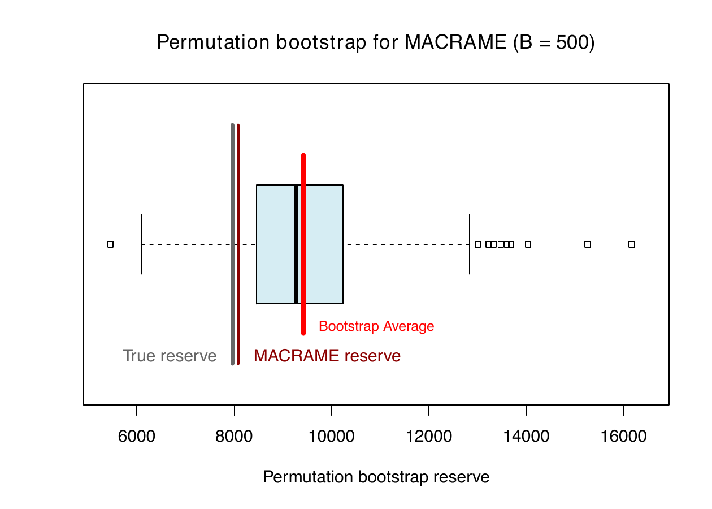
- Boxplot of \(\{\widehat{\mathcal{R}}^{(b)}\}_{b = 1}^{100}\) values
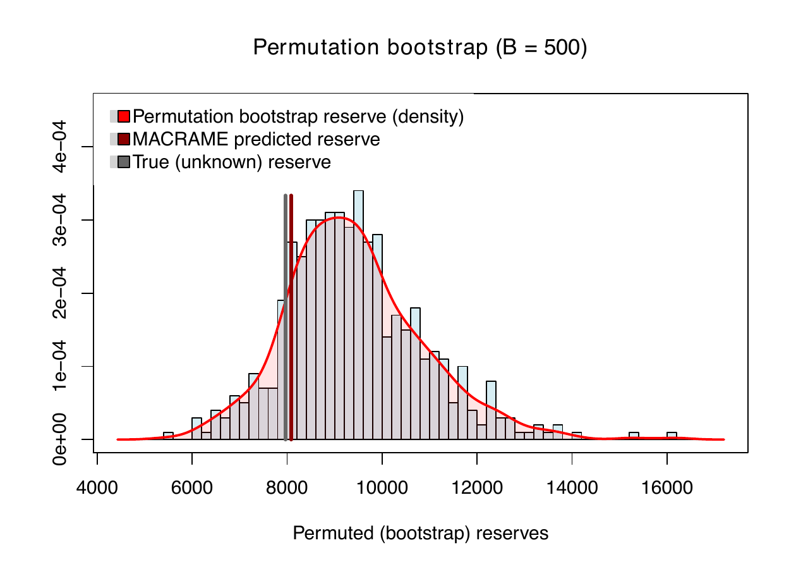
- Histogram and the estimated density
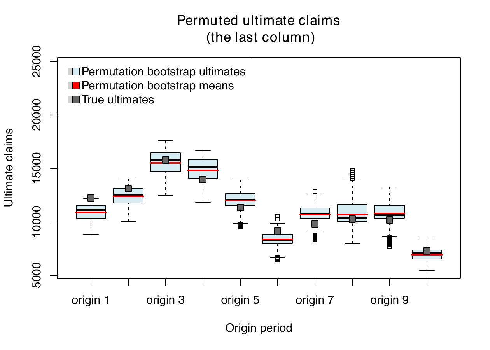
- Simulated ultimate claims
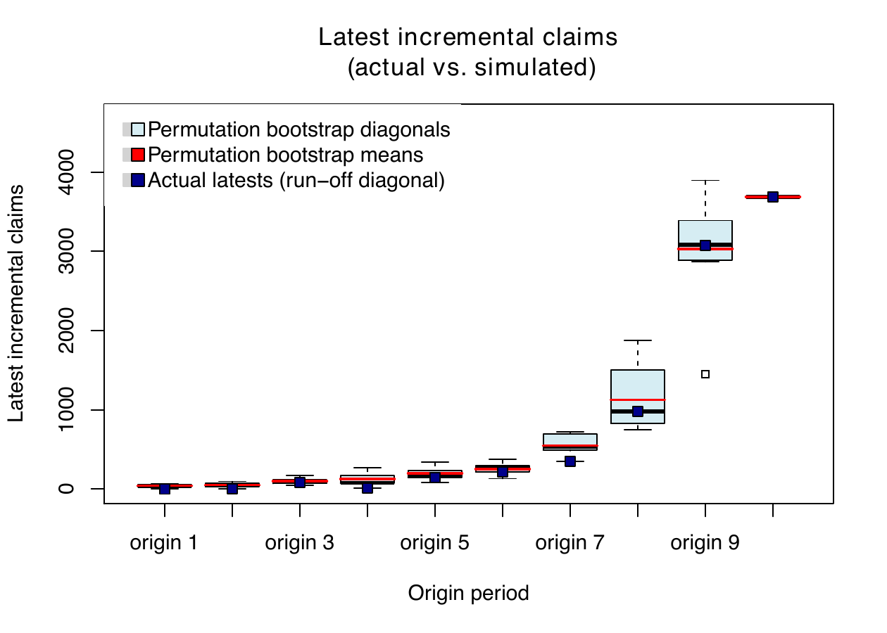
- Simulated run-off diagonals
permuteReserve() function when applied to the CameronMutual run-off triangle using the MACRAME algorithm and \(B = 500\) permutation bootstrap resamples. Four panels are provided in an analogous way as if the plot() function is applied to the output of some parametric estimation method implemented in the ChainLadder package (see, for instance, glmReserve() or MackChainLadder()).
The permuteReserve() function can also automatically inherit the user-based settings of
the Markov chain process (parameters breaks and states in the mcReserve() function in particular)
or some user-specified settings needed for the parametric reserving
methods (for instance, the link function used for the GLM based
reserving or the Tweedie model). In case of the MACRAME algorithm,
either the set of states and breaks is automatically adjusted for each
permuted run-off triangle (parameter adjustMC = TRUE which is the default option) or the
same set of states and breaks is used for each permuted run-off triangle
(adjustMC = FALSE) and, in addition, no standardization step defined in
(3) is
applied in such situation. The permuteReserve() function can be used analogously also for
classical parametric methods—for instance, the permutation bootstrap
applied to the Over-dispersed Poisson model implemented in glmReserve() from the ChainLadder
package can be obtained as
R> (distribution.glm <- permuteReserve(glmReserve(observed(CameronMutual))))
|>>>>>>>>>>>>>>>>>>>>>>>>>>>>>>>>>>>>>>>>>>>| 100% elapsed=08sMACRAME based reserving
Est.Reserve Est.Ultimate Paid Amount True Reserve
8601 113760 105159 NA Permutation bootstrap (B = 500)
Boot.Mean Std.Er. BootCov% BootVar.995
10889.391 1249.785 11.477 1.254 Computational efficiency and limitations
The proposed functional-based
reserving methods (including the permutation bootstrap algorithm) are
computationally very effective—particularly when compared with some
classical reserving techniques and standard residual bootstrap
implemented in the ChainLadder package. To illustrate this efficiency and to compare
the performance of the nonparametric methods (i.e., PARALLAX, REACT, and
MACRAME) with parametric ones (in particular: the chainladder method
implemented in chainladder(); Mack model from MackChainLadder(); over-dispersed Poisson model in glmReserve(); and
Tweedie model implemented in tweedieReserve()) we used three large (\(60 \times 60\))
run-off triangles from the GFCIB dataset (the fourth run-off triangle—the
annuities—cannot be used with the chainladder method and the Mack
model due to some fully zero rows) and the point predictions were
obtained together with the distributional predictions (using the
permutation bootstrap for each method and the residual based bootstrap
implemented in ChainLadder for the ODP model (glmReserve(..., mse.method = "bootstrap")) and the Tweedie model (tweedieReserve(..., bootstrap = 1)). The number
of bootstrap resamples was always set to \(B = 1000\) and MacOS
Architecture with 12 Apple M2 Pro chips (8 for performance and 4 for
efficiency) with 32GB memory was used to get the results summarized in
Table 3.
| Prediction method | Point prediction | Permutation bootstrap | Residual bootstrap |
|---|---|---|---|
| PARALLAX | \(0.03s.\) (0.006) | \(15.01s.\) (0.341) | ✗ |
| REACT | \(0.01s.\) (0.001) | \(9.04s.\) (0.116) | ✗ |
| MACRAME | \(0.04s.\) (0.012) | \(48.75s.\) (11.51) | ✗ |
| Chainladder | \(0.03s.\) (0.008) | \(31.70s.\) (0.276) | ✗ |
| Mack model | \(0.04s.\) (0.002) | \(42.10s.\) (0.650) | ✗ |
| ODP model | \(3.86s.\) (0.043) | \(63.37m.\) (0.148) | \(~~~\infty~m.\) (NA\(^{*}\)) |
| Tweedie formula | \(0.24s.\) (0.026) | \(4.19m.\) (0.307) | \(3.69m.\) (0.252) |
The limitations of the proposed methods are, on the other hand, mostly
determined by the ChainLadder package rather than the functions from ProfileLadder themselves. In
principle, there is no theoretical limitation for PARALLAX, REACT, or
MACRAME to handle as minimal run-off triangles as \(2 \times 2\). However,
unlike parallelReserve() which indeed handles such cases, mcReserve() does not (and the minimum
dimensions required are \(3 \times 3\)). This is caused by the internal
implementation of the cum2incr() function from the ChainLadder package which transforms
cumulative triangles into incremental ones. On the other hand, there are
no formal limitations for the maximum allowed dimensions that we would
be aware of.
Other features of the R package
The main core of the R package ProfileLadder consists of three key
functions—parallelReserve() for applying the PARALLAX or REACT algorithm, mcReserve() implementing
the MACRAME algorithm, and permutedReserve() providing the permutation bootstrap add-on.
Other generic functions (for the R objects of the class profileLadder, profilePredict, mcSetup, and permutedReserve) are
also implemented to facilitate a well structured summary of the outputs
and graphical visualizations of the results. In addition, there are a
few other helpful functions implemented in ProfileLadder. For a complex description
and illustrative examples, we refer to the R help session by using the
standard help() command. Below, we only provide a brief description of the
three most relevant functions that in some sense interconnect our
package ProfileLadder with the core actuarial package ChainLadder and some typical insurance
standards.
as.profileLadder()For the run-off triangle data type there is already an R classtriangleimplemented in the R package ChainLadder by Gesmann et al. (2025) with the corresponding R functionas.triangle(). This is a generic S3 class method that eases the work with the triangle shaped matrix data. However, the generic summary and plot methods do not allow distinguishing the observed functional profiles and the unknown “future” segments when using this R class. Therefore, we introduce an enhanced run-off triangle classprofileLadderthat provides more appropriate organization suitable for the nonparametric functional-based reserving techniques. For illustration, compare the following R code that produces two plots in Figure 9.### S3 class 'triangle' from the ChainLadder pkg R> plot(as.triangle(CameronMutual)) ### S3 class 'profileLadder' from the ProfileLadder pkg R> plot(as.profileLadder(CameronMutual))The new R class
ProfileLadderalso provides some additional information about the underlying run-off triangle (for instance, the true reserve amount if available, the triangle type–cumulative or incremental—and way more) and it also adapts various information provided by the functional-based algorithms (PARALLAX, REACT, or MACRAME);
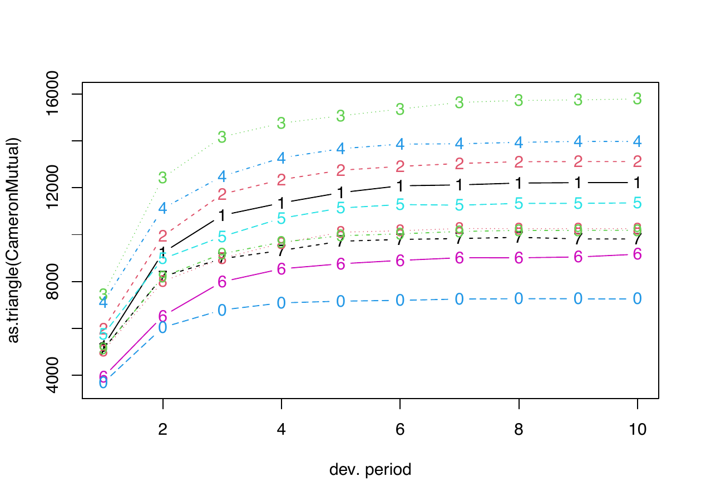
plot(as.triangle(CameronMutual))
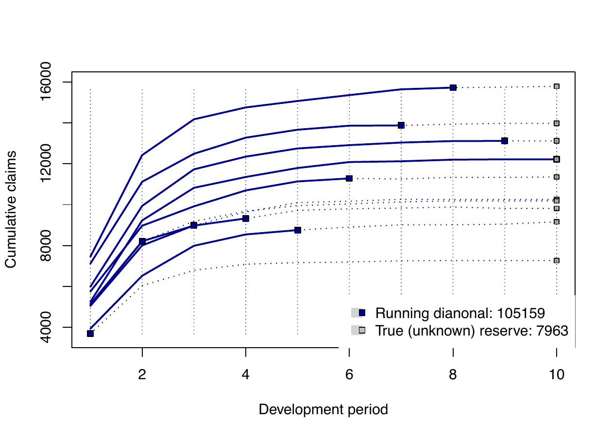
plot(as.profileLadder(CameronMutual))
plot() when applied to the same data set (CameronMutual) represented by different R classes. The left-hand panel shows the result for the triangle class defined in the package ChainLadder; the result for the profileLadder class is shown on the right-hand side.
observed()This function provides practical layouts (of different types) to distinguish observed and unobserved functional profiles in the run-off triangle (mainly in situations when the triangle is provided in terms of a full data matrix). This R function also allows for an application of classical reserving approaches from the ChainLadder package (such as theglmReserve(),tweedieReserve(), orMackChainLadder()) to be easily used with the fully observed run-off triangles supplemented in the ProfileLadder package. The run-off triangles included as example datasets in the package are (mostly) given in terms of full (squared) matrices (with the “unknown” future development profiles being also provided for an ex-post performance evaluation) while the parametric methods implemented in the ChainLadder package rely solely on the input data in form of the run-off triangle—meaning that \(Y_{i,j} = X_{i,j} = \textrm{NA}\) for all \(i + j > n + 1\). Compare, for instance, the following (where the first command results in an error message while the latter already works properly):R> glmReserve(CameronMutual) R> glmReserve(observed(CameronMutual))The same reasoning also applies for other parametric reserving methods from the ChainLadder package (
tweedieModel()andMackChainLadder()functions in particular).predict()A generic S3 class method applicable to the outputs of theparallelReserve()function and themcReserve()function—the objects of the classprofileLadder. For internal purposes of insurance companies, actuaries are at times interested in a one-step-ahead prediction only (typically a 1-year-ahead prediction say). Instead of completing the run-off triangle into a full square, the focus is then on predicting the so-called next running diagonal. The S3 methodpredict.profileLadder()performs this asR> predict(parallelReserve(CameronMutual))Unlike the run-off triangle completion where the output of
parallelReserve()ormcReserve()is a matrix of the dimensions \(n \times n\), the output of thepredict()method is actually a new run-off triangle of the dimensions \(n \times (n + 1)\) (the output is omitted for brevity).
4 Concluding remarks and summary
The ProfileLadder package is particularly developed to implement nonparametric methods into the actuarial risk assessment process performed by insurance companies (typically on a yearly or quarterly basis). Nevertheless, the underlying run-off triangle can be formally also represented in terms of an incomplete panel data scheme that is generally well known among statisticians and all types of practitioners. The statistical techniques and specific functions implemented in the R package ProfileLadder can be also used for such data. Some explicit datasets (briefly described below) are included in the package to illustrate possible applications beyond the actuarial domain.
Health care & epidemiology Triangular data, similar to run-off triangles, are common in tracking medical claims and receipts until resolution. Another example is epidemiological monitoring, such as tracking disease spread by new cases in specific cohorts over time. The dataset
covid19CZ(seehelp("covid19CZ")) captures the spread of Covid-19 in Czechia over the first eight weeks using weekly cohort data by counties (grouped by the week of the first case occurrence). We use also this data to demonstrate the functionality of thepredict()method mentioned at the end of the previous section. This function is not only useful for the actuaries, but it also has important practical utilization in any type of risk modeling. The S3 methodpredict()is implemented for the objects of the R classprofileLadderthat are created by theparallelReserve()function or themcReserve()function (for details, we refer to the help session obtained byhelp("predict.profileLadder")).Instead of completing the run-off triangle into a full square (by one of the algorithms PARALLAX, REACT, or MACRAME), the
predict()method only returns the prediction of the next running diagonal (also called a 1-step-ahead prediction). The same algorithms are used for the diagonal prediction, only the output is not a completed square but rather a new (extended) run-off triangle of the dimensions \(n \times (n + 1)\).For illustration, the
predict()method is applied below to the run-off triangle formed from the datasetcovid19CZ, using all four cohorts (rows) and weeks 3 to 6 (i.e., columns 3 to 6), to allow for an ex post comparison between the diagonal prediction and the actual true outcome (the next running diagonal incovid19CZ). The output from thepredict()method is another object of the R classprofilePredictwith the corresponding plot method, which provides a graphical illustration—see the R code and Figure 10 below.R> diagonal <- predict(mcReserve(covid19CZ[,3:6])) R> print(diagonal) 01/03 - 07/03 392 676 1158 1366 1396 08/03 - 14/03 1126 1702 2058 2264 . 15/03 - 21/03 970 1173 1173 . . 22/03 - 28/03 164 164 . . . R> plot(diagonal, trueProfiles = covid19CZ[,1:7])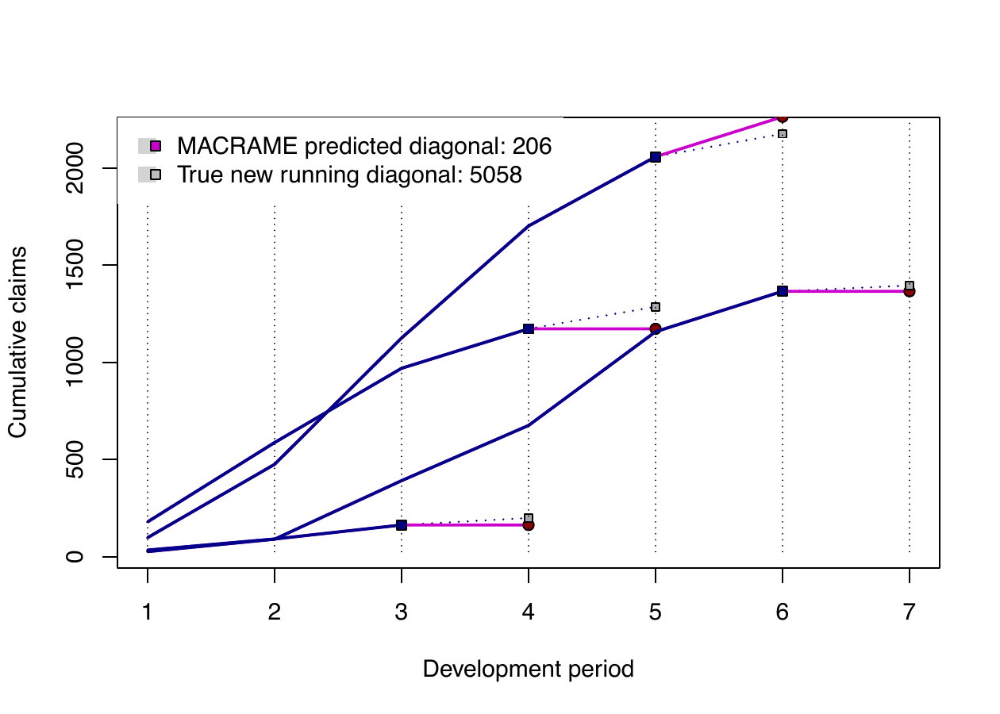
Figure 10: 1-step-ahead prediction
Moreover, the S3 method
predict()can be applied repeatedly to predict other consecutive diagonals as the output of thepredict()function is a run-off triangle (although of a rectangular shape with dimensions \(n \times (n + 1)\)), and, thus, it can be forwarded again as the input forparallelReserve()ormcReserve()(considering all \(n\) rows but only last \(n\) columns).Accounting & auditing Tracking unpaid invoices or tax adjustments based on past years is common in business and government, and such data often form a triangle structure too. The dataset
xNetSubscribe(seehelp("xNetSubscribe")) illustrates this with monthly income from a local internet provider, using cohorts of new subscribers by month;Operational risk & banking In general, the occurrence and development of events like fraud, IT failures, or compliance breaches can be viewed through the lens of operational risk. Such events are often tracked using development triangles, with rows indicating occurrence time and columns showing development periods;
Manufacturing & quality control Triangular data also arise in various production processes. The triangular schemes are typically generated when tracking defects and failures within specific production batches in order to predict failure rates and to manage maintenance schedules.
From the overall point of view, the nonparametric point prediction
methods implemented in the R package ProfileLadder (the algorithms PARALLAX, REACT,
and MACRAME) are, despite the fact that all were developed specifically
for the claims reserving purposes, widely applicable to any triangular
data schemes arising in real-life applications. There are three core
functions in the package: the first one, parallelReserve(), implements the PARALLAX
algorithm and the REACT algorithm; the second one, mcReserve(), incorporates a more
complex Markov chain prediction mechanism with a whole variety of
user-based options; the third function, permuteReserve(), estimates for the overall
reserve distribution—not exclusively for the proposed functional-based
methods, but also for classical parametric reserving approaches. This
function may thus serve as a practical alternative to a parametric
(residual) bootstrap. Auxiliary R functions are also implemented to make
the work with the triangular shaped data easier and more straightforward
especially when interacting with the actuarial package ChainLadder. Finally, unique
illustrative datasets from the actuarial practice and other practical
real-world areas are featured as well.
Acknowledgment The work of Maciak, Mizera, and Pešta was supported by the Czech Science Foundation grant GAČR 23–06461K. The work of Matúš was supported by MSD Czech Republic. The work of Maciak was also partially supported by COST (European Cooperation in Science and Technology) — COST Action HiTEc, No. CA21163. The authors express sincere thanks to Kurt Hornik for his insight and some useful pieces of advice regarding the ProfileLadder package. The authors are also grateful to Petr Jedlička from the Czech Insurers’ Bureau and Pavel Koudelka from Generali Česká pojišťovna for providing complex data from real-life insurance practice—not only for internal evaluation purposes but also for public access within the R package ProfileLadder. Last but not least, the authors appreciate the insight and help of Rob Hyndman and two anonymous reviewers—particularly for their suggestions and comments that helped to improve the overall quality of the package and the manuscript. The authors declare no conflict of interest.
5 Supplementary materials
Supplementary materials are available in addition to this article. It can be downloaded at RJ-2026-028.zip
6 CRAN packages used
ProfileLadder, ChainLadder, NetSimR, actuaryr, lifecontingencies, actuar, actuaRE
7 CRAN Task Views implied by cited packages
ActuarialScience, Distributions, Finance
8 Note
This article is converted from a Legacy LaTeX article using the texor package. The pdf version is the official version. To report a problem with the html, refer to CONTRIBUTE on the R Journal homepage.
The flipped run-off triangle is analogous to a transposition. However, unlike the matrix transposition performed with respect to the main diagonal, the flipped matrix is transposed with respect to the second diagonal—mathematically expressed, for a completed square \(\{Y_{i,j};~i = 1, \dots, n; j = 1, \dots, n\}\), the “flipped triangle” is the square \(\{\widetilde{Y}_{i,j};~i= 1, \dots, n; j = 1, \dots, n\}\), where \(\widetilde{Y}_{i,j} = Y_{n + 1 - i, n + 1 - j}\).↩︎
The set of breaks \(\{g_k\}_{k = 1}^{m - 1}\) can be specified differently but for a proper functionality of the MACRAME algorithm it is important that \(g_0 = -\infty\) and \(g_m = \infty\). The user can however either specify a sequence of breaks in a form \(-\infty \neq g_1 < \dots < g_{m - 1} \neq \infty\) and boundary values \(g_0 = -\infty\) and \(g_m = \infty\) are filled in automatically. Alternatively, the sequence of break points with one or both boundary points can be supplied.
↩︎